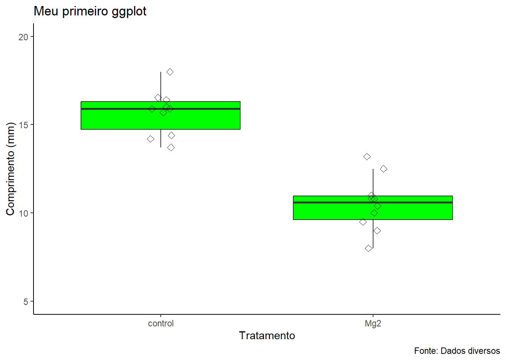

O foco para esse documento é relatar a importância e como realizar a importação de dados. Como também, demonstrar uma breve explicação sobre importância e elaboração de gráficos e como salvá-los.
Pacotes
Carregamento dos pacotes necessários para execução dos códigos desse documento. O pacote ec50estimator, será utilizado para acessarmos seu banco de dados denominado “multi_isolate”. O pacote readxl, será utilizado para importação de dados a partir de arquivos “.xlsx”. o pacote tidyverse, será utilizado para auxiliar na manipulação de dados. Por último, o pacote gsheet, será utilizado para importar dados de planilhas onlines.
library(ec50estimator)
Warning: package 'ec50estimator' was built under R version 4.3.3
library(readxl)library(tidyverse)
── Attaching core tidyverse packages ──────────────────────── tidyverse 2.0.0 ──
✔ dplyr 1.1.4 ✔ readr 2.1.4
✔ forcats 1.0.0 ✔ stringr 1.5.1
✔ ggplot2 3.4.4 ✔ tibble 3.2.1
✔ lubridate 1.9.3 ✔ tidyr 1.3.0
✔ purrr 1.0.2
── Conflicts ────────────────────────────────────────── tidyverse_conflicts() ──
✖ dplyr::filter() masks stats::filter()
✖ dplyr::lag() masks stats::lag()
ℹ Use the conflicted package (<http://conflicted.r-lib.org/>) to force all conflicts to become errors
library(gsheet)
Importação de dados
A importação de dados é uma etapa fundamental que precede a análise dos dados. Existem diversas maneiras para importar dados para o software RStudio. Por exemplo, os dados podem ser oriundos de pacotes (ex. ec50estimator), de planilhas (.xlsx), de arquivos de texto (.csv), diretamento de um arquivo da internet (planilhas onlines como as planilhas google) ou, não muito usual, criar objetos que carreguem os dados e montar um data frame.
df1 <- multi_isolate # Banco de dados do pacote ec50estimatordf2 <-read_excel("dados-diversos.xlsx") # Pacote readxldf21 <-read_excel("dados-diversos.xlsx", sheet =2) # Pacote readxldf3 <-read_csv("dados-diversos.csv") # Pacote readr
Rows: 60 Columns: 4
── Column specification ────────────────────────────────────────────────────────
Delimiter: ","
chr (1): Irrigation
dbl (3): rep, day, severity
ℹ Use `spec()` to retrieve the full column specification for this data.
ℹ Specify the column types or set `show_col_types = FALSE` to quiet this message.
Os gráficos são fortes aliados das pessoas que trabalham com análise de dados. A visualização de dados por meio de gráficos consiste em um dos primeiros passos para a análise exploratória após a importação dos dados. Os dados em forma gráfica permite visualizar tendências ou padrãos mais facilmente o que auxilia o pesquisador a definir como seguir com sua abordagem exploratória, o que não seria uma fácil tarefa apenas observando os dados planilhados.
Os dados são para construção do gráfico são de um ensaio com Delineamento Experiental Inteiramente Casualisado (DIC), com 2 tratamentos (Mg2 e Controle), 10 repetições e apenas uma variavel resposta (comp). Uma maneira de visualizar esses dados é por meio de grafico boxplot onde cada boxplot representa um tratamento. Por meio da gráfico conseguimos perceber que existe uma diferença entre os tratamentos, com valores de comp maiores para o tratamento controle do que o tratamento com Mg2. Por outra perspectiva, numericamente, o tratamento com Mg2 foi capaz de reduzir o valor da variável comp em relaçao ao controle.
O código abaixo gera um gráfico boxplot:
df2 |>ggplot(aes(x = trat, y = comp)) +geom_boxplot(outlier.color =NA, fill ="green") +geom_jitter(width =0.05,color ='black',shape =5,size =2) +theme_classic() +labs(x ='Tratamento',y ='Comprimento (mm)',title ='Meu primeiro ggplot',caption ='Fonte: Dados diversos') +scale_y_continuous(limits =c(5, 20),n.breaks =4)

Salvando o gráfico
Após a criação de alguma figura, as vezes é interessante salvá-la para usos posteriores. O pacote ggplot2 possui uma função destinada para isso, chama-se ggsave(). Com ela é possível salvar o gráfico gerado em um destino que pode ser especificado, assim como dimenções, resolução, formato de saída entre outras configurações que podem ser acessadas buscando ajuda (digite no console: ‘?ggsave’). Agora, retornando para salvar o gráfico gerado, na função ggsave(), determinamos o nome que queremos para a figura, assim como a cor de fundo espeificada pelo argumento ‘bg’. Ao executar o código a imagem é salva altomaticamente em seu diretório de trabalho.